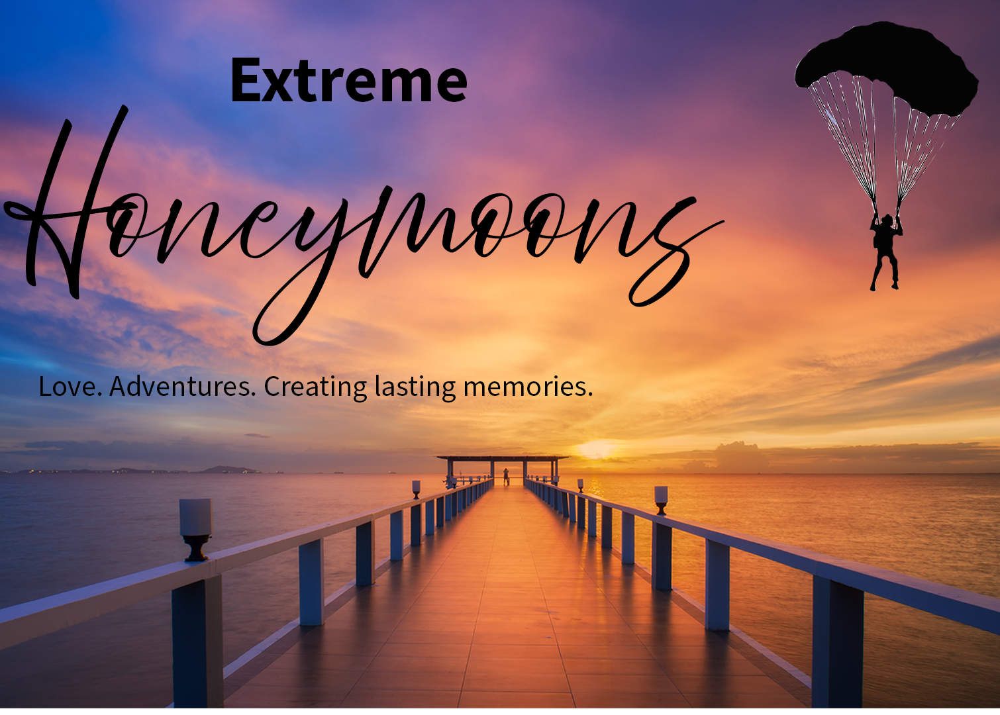
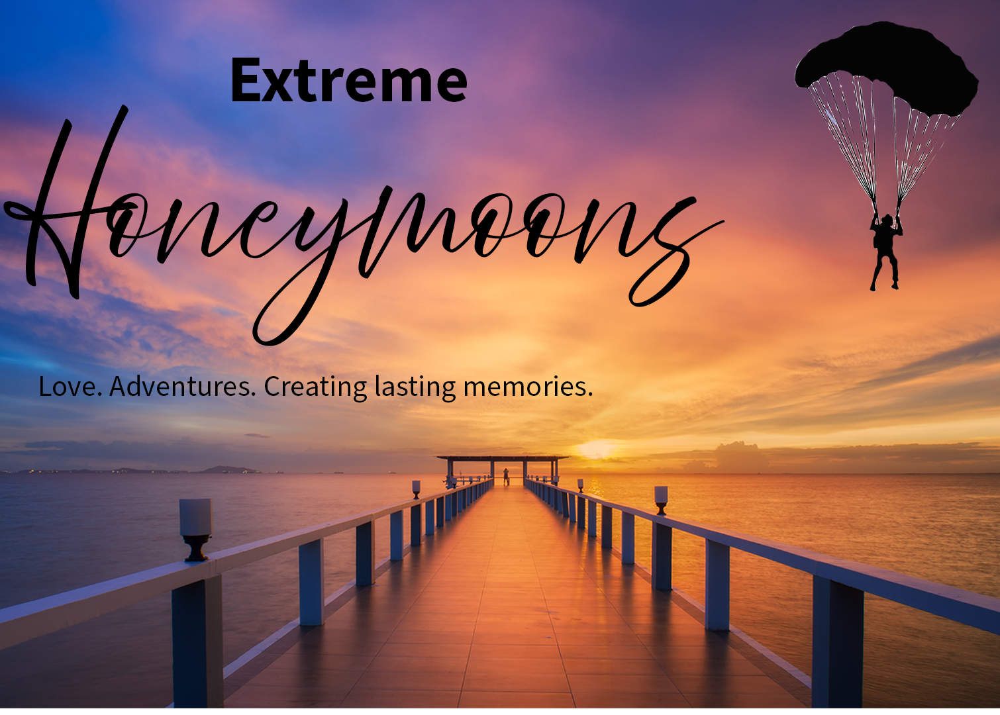

About Us — Extreme Honeymoons
In the Beginning

Ted and Betty Russon have been happily married for 30 years. They look back on their honeymoon at Arches National Monument with great fondness. They’ve kept that same spirit by trying new extreme sports together—just for fun.
Their original honeymoon mixed wild mountain biking over Moab’s red rock with a three-day white-water trip down the Colorado River. That adventure spirit became the DNA of Extreme Honeymoons.
Where We Are Today

Extreme Honeymoons has been in business since 1976. Over 2,000 couples have taken high-octane trips with us. Several of the Russons’ own kids have chosen ultra-extreme honeymoons too—proof the idea works for real couples.

Utah’s geography gives us a built-in advantage: world-class rivers, red rock, powder snow, and alpine peaks—often within a day’s drive.
Honeymoon Adventures
| Activity | Tour Length |
|---|---|
| Ice Climbing on Bridal Veil Falls | 1–2 day Tour |
| Bungee Jumping off Dead Horse Point | 2–3 day Tour |
| Cougar Bow Hunt — Manti-LaSal NF | 1 week Tour |
| Parasailing from Mt. Timpanogos | 1–2 day Tour |
| 4WD Safari Rendezvous in Moab | 1 week Tour |
| Swim with Carp in Utah Lake | 1–2 day Tour |
| Heliskiing on Kings Peak | 1–2 day Tour |
| Bobsled & Ski Jump — Utah Olympic Park | 2–3 day Tour |
What Makes Us Unique

Couples who want to truly know each other choose an extreme honeymoon. We handle the logistics—gear delivery, transportation, meals, and lessons—so you focus on the experience. Choose a guided package or pitch your own daring idea and we’ll build it. Just don’t forget to sign the waiver!
Press Releases

Wild Thing Magazine, August 2012
“If you believe you only get married once, make the honeymoon unforgettable. Extreme Honeymoons plans every step of an extreme trip so all you do is survive.”
Utah Brides Magazine, May 2012
“Worried your honeymoon might be forgettable? Consider an Extreme Honeymoon. Reasonably priced tours, insurance included, and totally safe.”